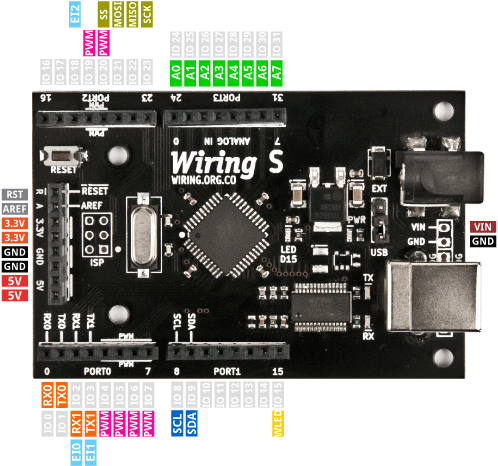
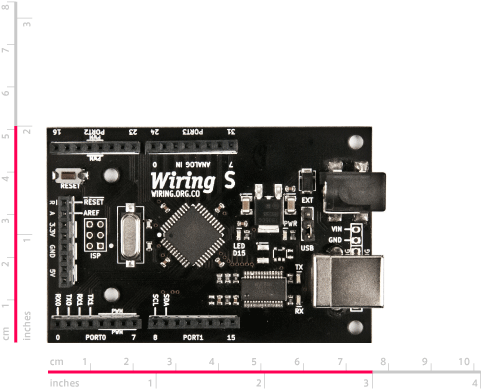

The Wiring hardware is a small circuit board that includes a tiny computer the size of a postage stamp known as a microcontroller. This computer can be programmed in the Wiring programming environment to control all kinds of sensors and actuators. Sensors are devices that allow the board to acquire information from the surrounding environment (temperature, light, distance to an object etc.). Actuators are devices that allow the board to create changes (responses) in the physical world (light, movement, temperature, etc.) .This makes it possible to create all kinds of interactive artifacts.
A microcontroller addresses some of the difficulties involved in prototyping with electronics by introducing the concept of programming into it. The same unit can behave in different ways, just by doing or modifying a software program to adapt it to a specific purpose.
In order to attach sensors and actuators the Wiring hardware provides a set of connectors known as pins. A pin can be set as INPUT or OUTPUT whether it is used to read a sensor or create responses in the physical world through actuators. Sensors can be of different kinds but they may be grouped into digital and analog. Digital refers to signals with two possible states, ON or OFF, HIGH or LOW, like switches for example or special digital communication protocols. Analog refers to signals that can take any value in a continuous range, like luminosity or temperature.
Pins can have alternate functions, check the diagrams and information below. Normally one type of function in a pin can be used a time.
The Wiring hardware can be connected to a computer's USB port. This connection is both for uploading a new program written in the Wiring programming environment into the Wiring hardware and to communicate the Wiring hardware with a host computer for other purposes, like sending data from/to the board to an application running on a PC. The PC recognizes the Wiring hardware as a serial port, being able to receive and send data to/from it from running applications.
There are 3 basic prototyping scenarios Wiring was designed for: standalone interactive objects or spaces (no need to be connected to a host computer), interactive objects or spaces connected to a host computer to enhance the prototype capabilities, or networked objects or spaces by communicating multiple hardware devices.
There are different flavors of the Wiring hardware: The Wiring/WiringMini V1.0 boards (include all original Wiring boards up to revision 0004 and WiringMini featuring the atmega128 microcontroller), the Wiring V1.1 Sparkfun board (manufactured and distributed by sparkfun.com and featuring the atmega1281 and atmega2561 microcontrollers) and the new generation Wiring boards: Wiring S (featuring the atmega644p microcontroller) and distributed by roguerobotics.com, Wiring M, Wiring XS and Wiring L (which will be available soon).
The Wiring hardware can be used out of the box, it provides a USB port on it which can be directly attached to a computer for uploading programs, no special setup or connections needed to start working with it so it is ideal in the classroom as it is just ready to use.
If you want to get the original Wiring hardware go to http://roguerobotics.com. To see compatible boards or build your own please check the FAQ or download the EAGLE and schematics files for the hardware designs. If you are looking for tutorials for installing the Wiring hardware and software check out the Learning / Tutorials section.
Topics covered here include: Digital input/output pins, Analog input pins, PWM (analog) output pins, Serial ports, Pins with special functions, External interrupts pins, Digital input/output ports, on-board LEDs, and Power supply.
The Wiring S board
Is the first board from the new hardware generation. The Wiring S features the atmega644p microcontroller. With 32 I/O pins, 8 analog inputs, 2 hardware serial ports, 6 PWM (analog outputs), SPI, TWI, 3 external interrupts pins, power regulation with output for both 5V and 3.3V. See the comparison.

Wiring S dimensions. For full schematics and source files visit the download section
 Digital input/output pins
Digital input/output pins
The Wiring hardware has digital pins that can be configured and used individually as inputs or outputs from the Wiring Framework API in the Wiring programming environment. When a digital pin is configured as INPUT it can be used to read all kind of sensors that give values HIGH (On) and LOW (Off), like push buttons, touch sensors, switches etc. read pulses or interface any digital sensors in general. When a pin is used as an OUTPUT it can be used to turn on or off all sort of devices like light bulbs, motors, home appliances, generate pulses etc.
All Wiring hardware include an on-board LED connected to a digital pin that can be used for doing quick test programs or diagnostics. The on-board LED pin is called WLED in the Wiring Framework API.
On Wiring V1.x boards WLED is on pin 48
On Wiring S board WLED is on pin 15
Analog input pins
The Wiring hardware has analog inputs capable of reading voltages between 0-5V. Internally the voltages are translated into numbers from 0 to 1023. These inputs can be used to measure continuous quantities like light intensity, temperature, proximity, position using analog sensors etc.
NOTE: Analog Inputs can also be used as digital pins if needed, just use the continuous numbering of digital pins with the pinMode, digitalRead or digitalWrite commands to access them as digital pins.
PWM (analog) output pins
The Wiring hardware has PWM (Pulse Width Modulation) output pins. PWM consists of switching something ON and OFF thousands of times per second simulating the behavior of an analog output, creating effects like light intensity dimming or controlling the speed of a motor. The PWM functionality is available in specific pins.
On Wiring V1.x boards the PWM capable pins are: 29, 30, 31, 35, 36 and 37
On Wiring S board the PWM capable pins are: 4, 5, 6, 7, 19 and 20
Serial ports
The Wiring hardware has 2 hardware serial ports. In the Wiring Framework API one is called Serial and the other called Serial1. The serial port Serial is the same available through the USB connector and it is used for both programming the Wiring hardware with the Wiring development environment, and to communicate with other devices.
On Wiring V1.x boards the serial port Serial pins are: 32(RX0) and 33 (TX0) and the serial port Serial1 pins are: 2(RX1) and 3(TX1)
On Wiring S board the serial port Serial pins are: 0 (RX0) and 1 (TX0) and the serial port Serial1 pins are: 2(RX1) and 3(TX1).
Pins with special functions
The Wiring hardware provides ISP and TWI (Two Wire Interface) also known as i2c interface. The TWI allows to connect up to 128 i2c sensors/actuators in a network using only 2 wires to communicate with all of them. It is also possible to use those pins to create a network of up to 127 Wiring boards using the Wire library. ISP protocol is handled by the SPI library and TWI protocol is handled by Wire library.
On Wiring V1.x boards the ISP pins are: 24 (SS), 25 (MOSI), 26 (MISO) and 27 (SCK) On Wiring v1 boards the TWI pins are: 0 (SCL) and 1 (SDA)
On Wiring S board the ISP pins are: 20 (SS), 21 (MOSI), 22 (MISO) and 23 (SCK) On Wiring S boards the TWI pins are: 8 (SCL) and 9 (SDA)
External interrupts pins
It is possible to generate and attend external interrupts in the Wiring hardware. There pins on the Wiring hardware capable of generating external interrupts
On Wiring V1.x boards the external interrupts capable pins are: 0, 1, 2, 3, 36, 37, 38, and 39, named as EI0..EI7. Note: pins 0 and 1 are also used for the Wire library (TWI) and pins 2 and 3 are also the serial port Serial1.
On Wiring S board the external interrupts capable pins are: 2, 3, and 18, named as EI0, E1 and EI2. Note: pins 2 and 3 are also the serial port Serial1.
Digital input/output ports
In the Wiring hardware pins are grouped in ports. In most cases a port is a set of 8 pins, and can be used to send or receive data to devices in parallel (8 bits at a time). They are useful when using devices like liquid crystal displays or printers. Each port can be configured and used individually as INPUT or OUTPUT from the Wiring Framework API in the Wiring programming environment through the portMode, portRead and portWrite commands.
Note: It is possible to use the analog input section as a digital one, in such case individual pins and the port will continue to be numbered continuously.
On-board LEDs
The Wiring hardware has four LEDs on-board: a power LED showing if the board is powered, an LED directly attached to a digital pin that can be turned on or off from the Wiring Framework API and known as WLED and reception (Rx) and transmission (Tx) LEDs indication the serial port Serial (USB) data exchange activity.
Power supply
A generic 7-12 Volt 1000mA power supply with female, center positive connector is required to power the Wiring hardware. It will suit fine for a number of applications, but if more power is required, it is recommended to get a more robust power supply. The Wiring hardware can also be powered from external batteries.
For small experiments, with low current consumption devices, the Wiring hardware can be powered from the computer's USB port when the board is connected to a host computer via a USB printer cable.
A USB Cable (generic USB printer cable) is required to connect the Wiring hardware to a host computer. The WiringMini requires a serial to USB adapter (like the Wiring USBAdapter) to connect it to a host computer.
Previous generation Wiring boards